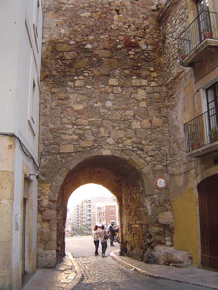
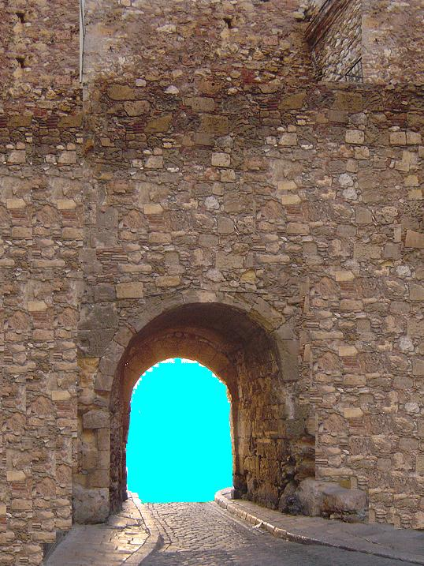
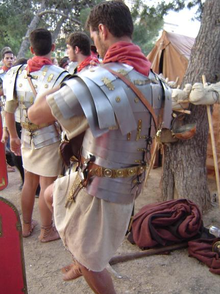

DIA II
Nos despertamos cuando el sol estaba casi en su cenit, comimos algo de fruta y después de asearnos un poco salimos en dirección de Tarraco. En el breve camino de la villa de mi amigo a la ciudad, vimos uno de los principales Acueductos que abastecen de agua a la capital. Robusta y bella obra de la ingeniería romana.
|
  Puerta sur ahora y en la época romana |
Esta vez entramos por la puerta sur para dirigirnos al Foro Local (A) y ver la posibilidad de alquilar un cubiculo para vender mi mercancía. Por fin y tras negociar varias horas alquilé una pequeña habitación junto al Foro Local (A) para realizar mis ventas. |
|
|
Ya tranquilos y antes de dirigirnos al puerto donde ya habría llegado mi mercancía, nos pasamos por el Teatro (B) monumental de Tarraco. Impresionante su aforo y bella decoración para tan noble arte. Aquí disfrutamos y nos relajamos viendo los ensayos de una comedia Latina que se estrenaba al día siguiente, y paseando por su tranquilo ninfeo. |
|
 |
Al llegar a puerto vimos como desembarcaban y preparaban sus atuendos unos legionarios que se dirigían a lo mas profundo de la Provincia para mantener el orden y la paz en las antiguas tierras celtiberas. Tarraco desde su misma fundación siempre ha sido lugar de desembarco y distribución de tropas por casi toda la Hispania. Por lo tanto era habitual ver esta imagen. Les saludamos y deseamos que los Dioses les protejan y buscamos el almacén que guardaba mi genero.
Ya comprobada que mi mercancía había llegado bien era cuestión de buscar buenas relaciones. Mi amigo Tito había sido invitado a la Villa del gobernador, donde se celebraría una gran cena y donde asistirían las elites de Tarraco.
Y aquí termina mi relato amigos, breve y sencillo para mostraros la capital de la provincia más grande de la Hispania; ya me siento un Tarraconensis mas, y os invito a disfrutar de esta ciudad, que casi me atrevería a decir que dentro de 2000 años seguirá mostrando con orgullo lo grandioso de su pasado. El mismísimo Julio Cesar pernoctaba en ella en sus campañas por la Hispania, y seguro que nunca la olvidó, como os pasara a vosotros cuando entréis en ella y su historia.
Ave urbs triumphalis TARRACO !